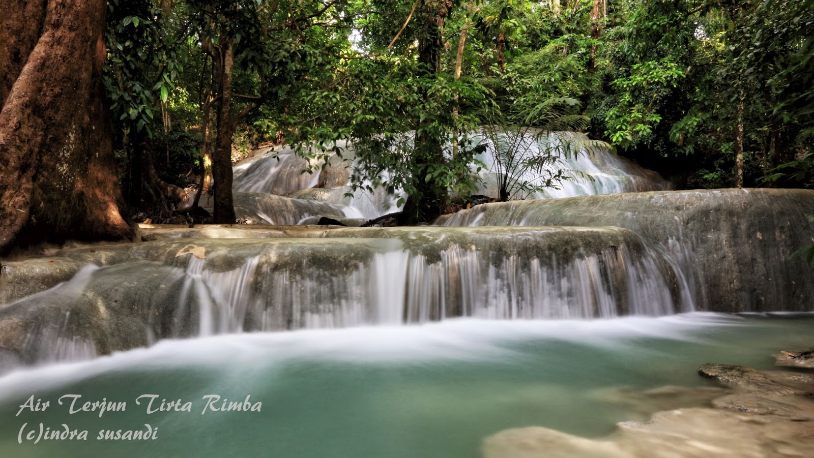
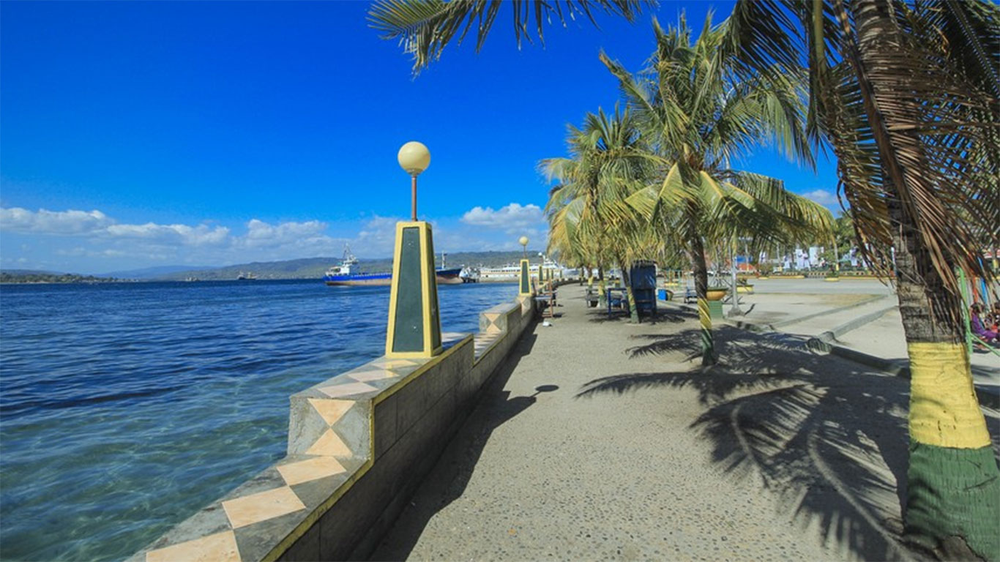
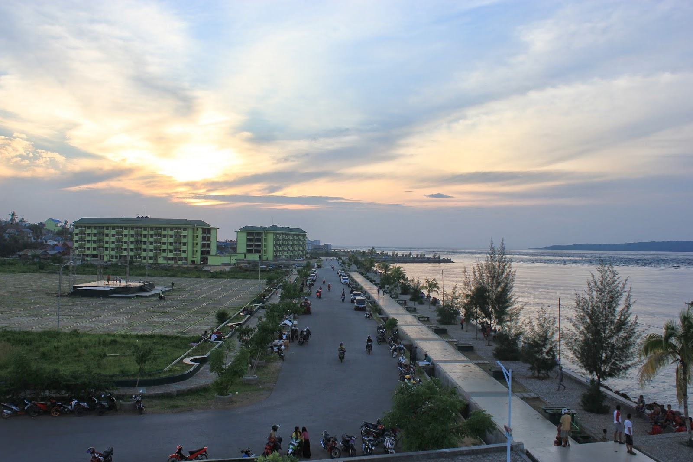

Tirta Rimba
SUHU Yang dingin dan sejuk mulai terasa ketika memasuki kawasan yang penuh dengan pepohonan. Suara air yang jatuh mulai terdengar dari kejauhan ketika memasuki kawasan Taman Wisata Alam Tirta Rimba yang berada di Kota Baubau, Sulawesi Tenggara. Kawasan ini terdapat air jatuh dengan ketinggian sekitar 12 meter yang menjadi tempat favorit bagi warga Kota Baubau dan sekitarnya. Menurut seorang pengunjung, Yani (28), air jatuh ini begitu indah sehingga membuatnya betah untuk berlama-lama di daerah tersebut. "Tempatnya sejuk dan agak dingin. Apalagi air terjunnya bagus dan indah. Saya dan beberapa teman kadang datang kesini untuk refreshing saja," kata Yani, Sabtu (19/3/2016). Ya kawasan wisata alam Tirta Rimba yang berada di Kelurahan Kadolomoko, Kecamatan Kokalukuna, terdapat banyak rimbunan pepohonan yang lebat. Memasuki kawasan ini, di samping kiri terdapat aliran sungai dari air jatuh. Menurut seorang warga sekitar, La Ani (45), air jatuh tersebut sering didatangi pengunjung dari luar Kota Baubau. Kebanyakan para pengunjung melakukan foto selfie dengan latar belakang air jatuh tersebut. "Ada yang datang dari Kabupaten Buton, dan juga dari Batauga. Mereka datang refreshing dengan keluarganya di sini," ujar La Ani. La Ani menambahkan, air jatuh kali ini terlihat bagus saat ini karena di musim hujan, sehingga air sungai mengalir hingga ke laut. Namun, bila musim kering, air jatuh tersebut menjadi kering juga.
Pantai Kamali
Setiap daerah tentunya memiliki satu tempat yang sudah melekat dengan daerahnya masing masing. Tempat tempat tersebut ibarat sebuah ikon yang akan langsung muncul di pikiran orang-orang ketika berbicara tentang daerah yang dimaksud. Ketika berbicara tentang Kota Baubau yang terletak di Provinsi Sulawesi Tenggara, mungkin nama Pantai Kamali lah yang akan pertama kali muncul ketika mengingat tentang kota yang berada di Pulau Buton ini. Pantai Kamali merupakan tempat favorit bagi masyarakat Kota Baubau untuk berkumpul dan bersenda gerau bersama orang orang terdekat. Di sekitar area pantai, terdapat patung naga dengan ukuran yang cukup besar yang juga menjadi ikon dari Kota Baubau. Area di Pantai Kamali dibagi menjadi tiga area utama. Area di wilayah barat pantai ditujukan sebagai tempat parkir bagi kendaraan dari para pengunjung pantai. Area ini juga didominasi oleh para pedagang kaki lima yang menjajakan berbagai macam dagangan. Di wilayah timur pantai, terdapat area yang dimanfaatkan oleh para pedagang yang berdagang di malam hari. Area tengah pantai terdapat ikon dari Kota Baubau yaitu patung naga yang merepresentasikan kekuatan, kejayaan, dan kegigihan dari Kerajaan Buton dahulu. Area di tengah pantai ini dapat dikatakan sebagai pusat dari seluruh area di Pantai Kamali. Di area tengah Pantai Kamali ini, para pengunjung dapat bersantai dengan menikmati berbagai macam hidangan dan minuman yang dijajakan para penjual termasuk diantaranya adalah Saraba, minuman yang terbuat dari jahe yang mirip dengan wedang dan bandrek di daerah Jawa.
Kota Mara
Kotamara bukanlah suatu nama kota dengan keamarahan, namun ini merupakan salah satu kawasan yang paling indah di Kota Baubau, Provinsi Sulawesi Tenggara. Ya, kita dapat menikmati indahnya sinar matahari saat terbenam atau sunset sambil duduk santai di atas beton dengan secangkir kopi.
Kotamara yang dibangun tahun 2010 ini menjadi tempat hang out favorit bagi kawula muda Kota Baubau dan sekitarnya. Selain menjadi tempat nongkrong, ini juga dijadikan tempat olahraga bagi masyarakat.
"Di tempat ini, saya dapat menikmati senja. Sunset-nya sangat indah. Biasa setelah pulang kantor, saya dengan teman-teman duduk santai di sini sambal minum kopi," kata Agus (28), warga Kelurahan Tomba, Kecamatan Wolio, Selasa (27/10/2015). Kotamara merupakan kawasan reklamasi pantai dari Kelurahan Nganganaumala, hingga ke Kelurahan Wameo, Kecamatan Batu Poaro. Seorang penjual makanan yang berada di dalam kawasan Kotamara, Yunita Zaidi (25), kawasan Kotamara selalu ramai setiap sore. "Setiap sore, banyak yang duduk nongkrong di beton pinggir laut itu. Tapi ada juga yang olahraga lari sore di sini," ucapnya. Suasana Kotamara di sore hari memang sangat mendukung untuk dilakukan kegiatan olahraga.